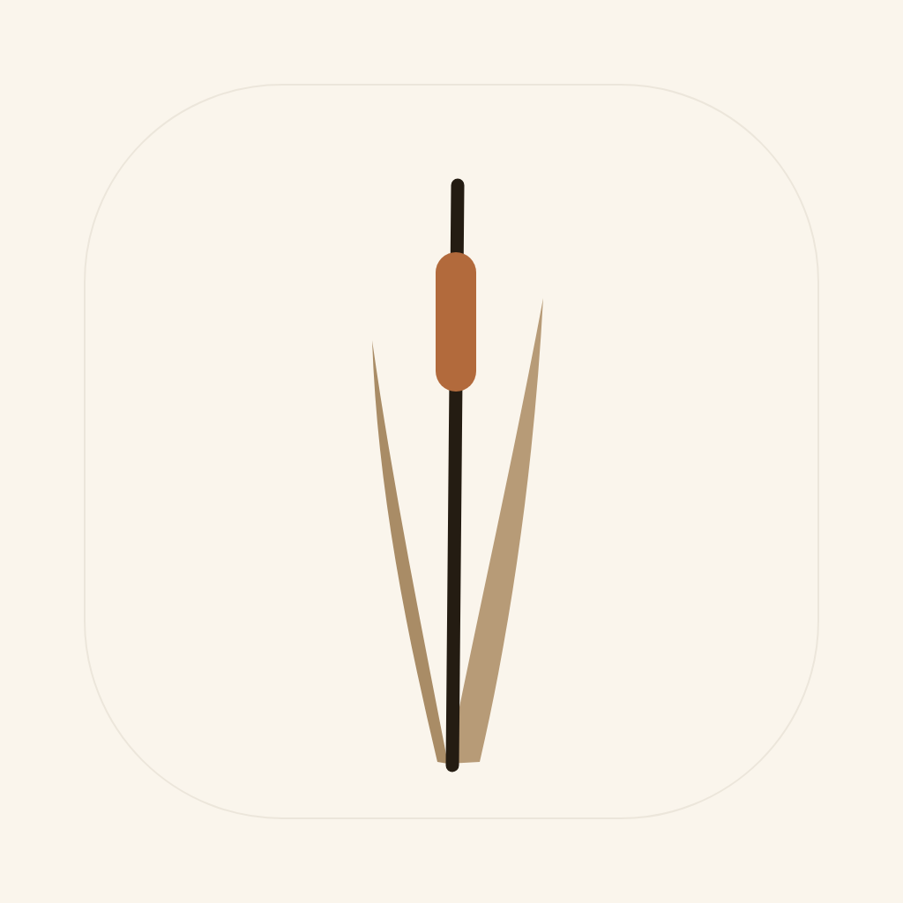
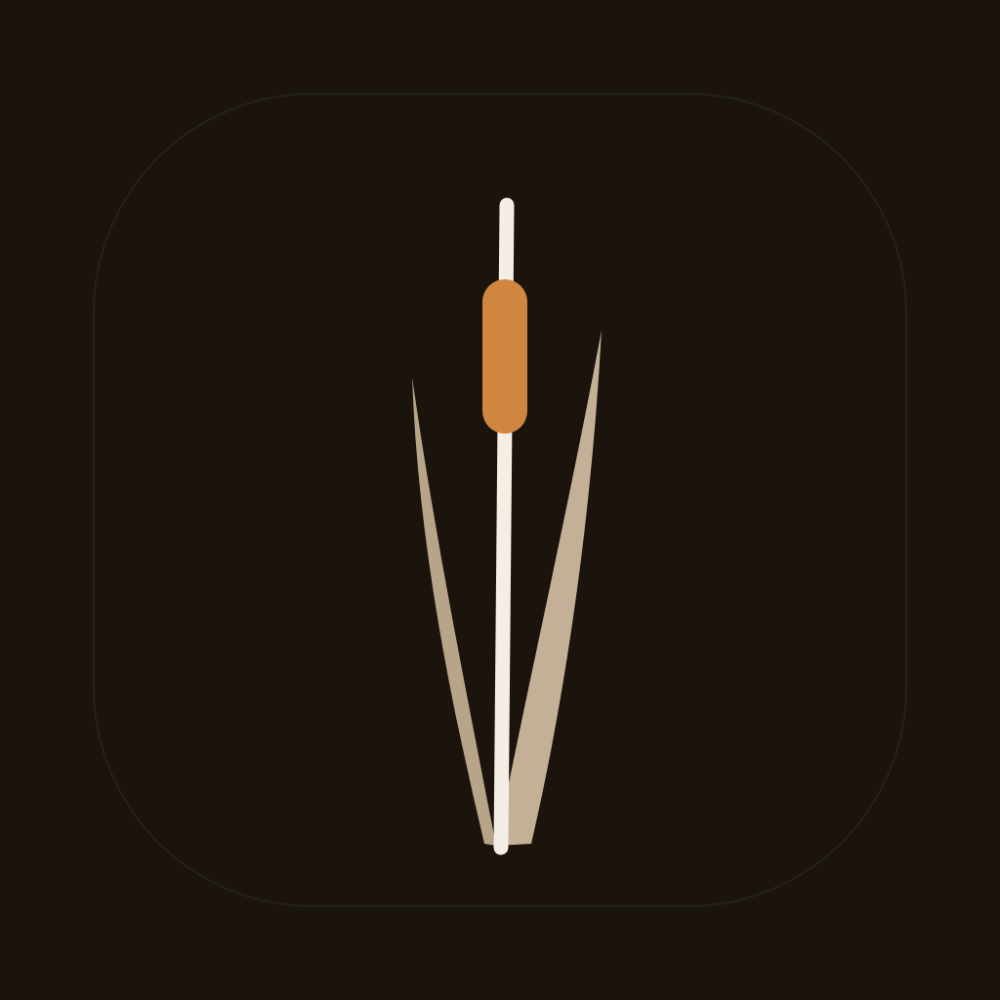

Reed — brand mark
A bulrush reed: the vibrating tongue that gives an instrument its voice, and the reed pen that first carried writing.

app icon — light

app icon — ink
wordmark — light

wordmark — ink